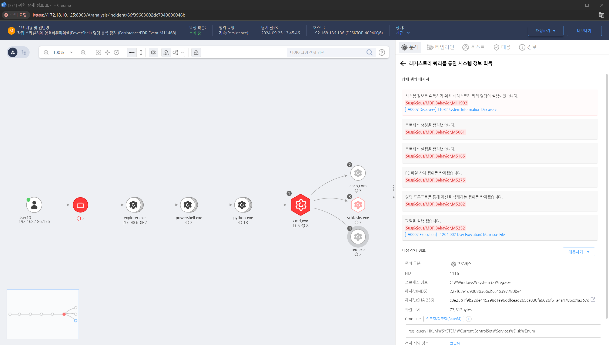

MITRE ATT&CK 액션을 기준으로 대응 방안을 작성
시스템 정보를 획득하기 위한 레지스트리 쿼리 명령어를 실행하는 것을 탐지합니다.

시스템 탐색 명령어(systeminfo, ipconfig, hostname, wmic, uname, ps 등)가 실행된 기록을 확인합니다. 비정상적인 시간대나 일반 사용자가 실행한 경우를 특히 주의 깊게 조사합니다.
시스템 로그, 보안 이벤트 로그, PowerShell 로그(Event ID 4104) 등을 분석하여 공격자가 시스템 정보를 수집한 흔적을 찾습니다.
시스템 정보 탐색을 수행한 것으로 의심되는 비정상적인 프로세스를 식별합니다. 이를 위해 Task Manager, Process Explorer, ps 등을 사용하여 실행 중인 프로세스를 확인하고 분석합니다.
Volatility, Sysinternals 등의 도구를 사용하여 메모리 덤프를 분석하고, 시스템 탐색을 시도한 악성 프로세스를 추적합니다.
공격자가 수집한 시스템 정보를 외부로 전송하려는 시도를 탐지하기 위해 네트워크 트래픽을 분석합니다. Wireshark, NetFlow 등을 활용하여 비정상적인 패킷이나 데이터 전송이 있는지 확인합니다.
공격자가 외부 명령 및 제어(C2) 서버로 시스템 정보를 전송하려는 경우 해당 연결을 즉시 차단합니다.
공격이 의심되는 시스템을 네트워크에서 격리하여 추가 피해를 방지하고, 포렌식 분석을 통해 공격자가 어떤 정보를 수집했는지 파악합니다.
시스템의 디스크 이미징을 수행하고 메모리 덤프를 분석하여 공격자가 수집한 시스템 정보를 추적합니다.
시스템 정보를 수집한 사용자의 계정 활동을 조사하고, 해당 계정이 권한을 남용하여 시스템 정보 탐색을 시도했는지 확인합니다.
권한 상승이나 관리자 권한을 부당하게 사용한 계정을 비활성화하거나 재설정하여 추가적인 정보 수집을 방지합니다.
공격이 의심되는 시스템을 복구하고, 취약점을 해결합니다. 필요한 경우 시스템을 포맷하거나 백업에서 복구하여 악성 활동이 남지 않도록 합니다.
공격 후 보안 정책을 재검토하고, 추가적인 보안 조치를 시행합니다. 시스템 탐색과 관련된 명령어 실행에 대한 접근 통제를 강화하고, 보안 점검을 정기적으로 수행합니다.
사용자 권한 제한
특권 계정 관리
명령어 실행 제한
PowerShell 실행 정책 설정
시스템 명령어 실행 모니터링
SIEM 시스템 설정
네트워크 분할
방화벽 및 ACL 설정
패치 관리
Action 실행시 함께 영향을 받는 다른 Techniqes
| ATT&CK |
|---|
| T1082.000 |
| D3FEND |
|---|
| D3-SCA System Call Analysis |
| D3-PM Platform Monitoring |
| D3-FA File Analysis |